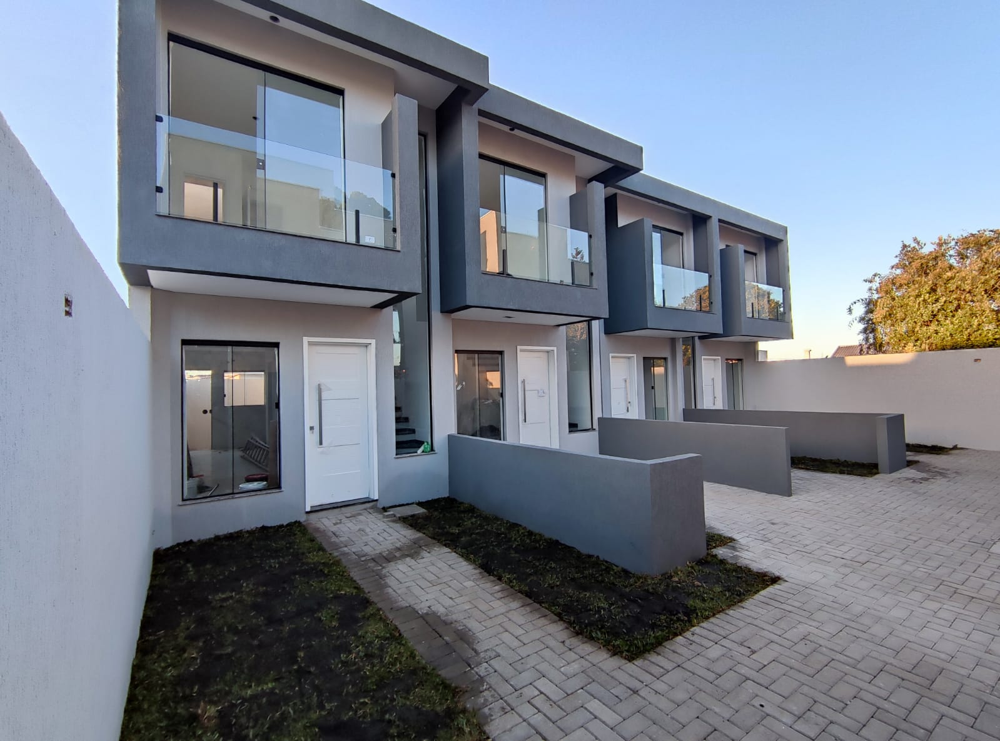
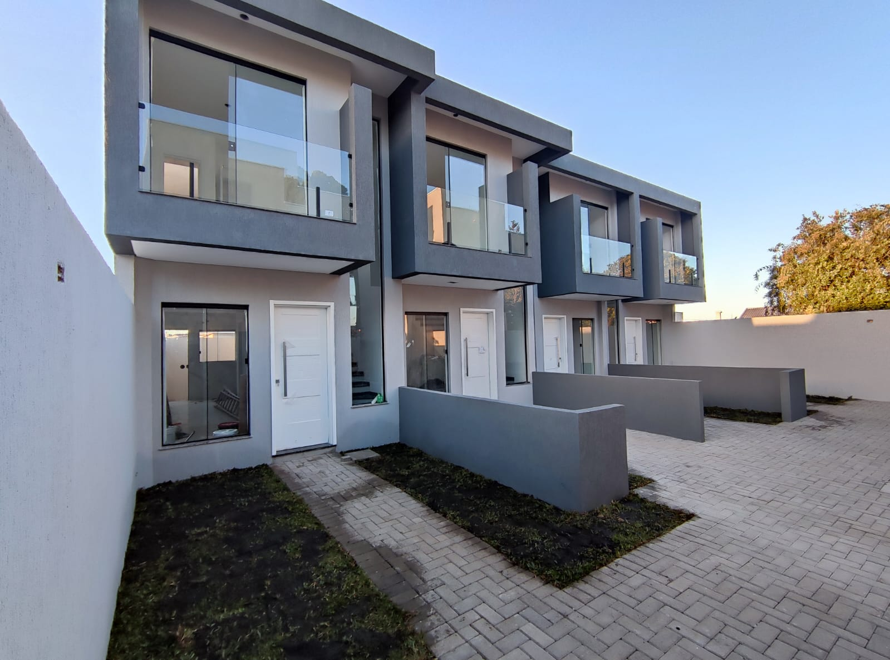

Minha Casa Minha Vida: Como fica o programa em 2023?
O programa Minha Casa Minha Vida se transformou no programa Casa Verde e Amarela, no ano de 2020. Porém, com a posse do presidente Lula em 2023, o Casa Verde Amarela acabou e o Minha Casa Minha Vida foi relançado em um modelo mais moderno e completo. Agora, mais famílias serão beneficiadas e o foco principal do principal programa habitacional do governo brasileiro são as pessoas carentes, que têm renda menor. Os imóveis oferecidos serão mais sustentáveis, acessíveis e terão melhor localização.
Site de imoveis....
Ssegundo h1..
Hello world